Rapport de SAE S1.04 : Creation d'une Base de Données
Ressources liées à cette SAE :
- R1-02 : Développement d'interface web
- R1-07 : Introduction aux bases de données et SQL
- R1-09 ; Economie durable et numérique
Le but du projet était de manipuler une base de données dans un contexte économique liée à une entreprise répondant au nom de Kdou afin de proposer des solutions "éco-friendly".
Ce site constitue le rapport de ce projet effectué par Gregory Jougom
Vous retrouverez la synthèse des missions effectuées et leurs résultats.
Vous aurez par la suite également un apercu des éventuelles difficultés rencontrées
1- Missions de la SAE
Il était question d'étudier la base de donnée suivante :
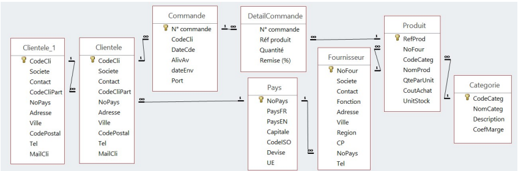
Les différentes requètes effecutées:
-
Requete 1 : Recherche de tous les clients situés à Paris (triés par société)
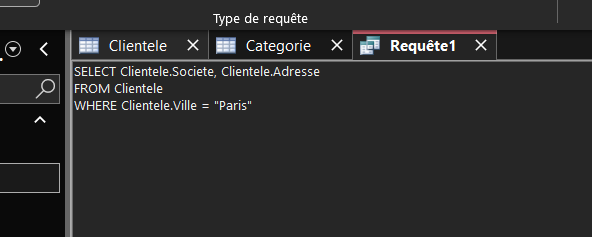
Renvoie une liste de clients beaucoup plus restreinte
-
Requete 2 : Recherche des produits provenant des USA et coutant moins de 25 euros.
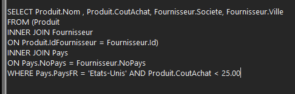
Cette requete a donc renvoyer une liste des produits concernés, de leur ville, de provenance et de leur fournisseur
-
Requete 3 : Recherche de tous les fournisseurs proposant de la viande ou du poisson
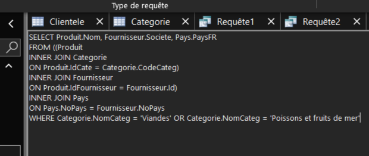
Cette requete renvoie donc le nom du produit étant donc du poisson ou de la viande, son fournisseur et le lieu de ce dernier.
-
Requete 4 : On recherche les 3 dernières commandes de Max Deschamps
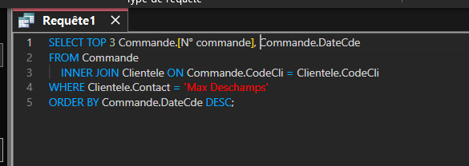
Cette requete affiche donc la liste des 3 dernières commandes de M. Deschamps (via leur identifiant) suivi de la date de la commande.
Voici les 5 indicateurs à effectuer :
-
Indicateur 1 : CA Total généré à ce jour avec les fournisseurs de l'UE
On cherche ici à calculer le chiffre d’affaires effectué qu’avec des produits venants de pays membres de l’UE. Ça peut être intéressant pour définir si une région telle que l’UE apporte du CA à l’entreprise et a estimé son importance dans les revenus de l’entreprise.
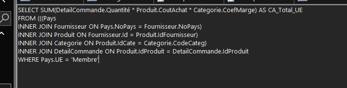
La requete suivante renvoie donc le CA de Kdou uniquement pour les fournisseurs provenant de l'Union Européenne
-
Indicateur 2 : CA annuel pour les boissons et desserts.
On cherche ici à calculer le chiffre d'affaires annuel généré uniquement par les ventes de produits appartenant aux catégories des desserts ou des boissons. Ça peut être intéressant pour observer l'évolution des ventes sur ces types de produits d'une année sur l'autre, et estimer s'il est pertinent pour l'entreprise de continuer à investir ou à faire des promotions sur ces catégories précises.
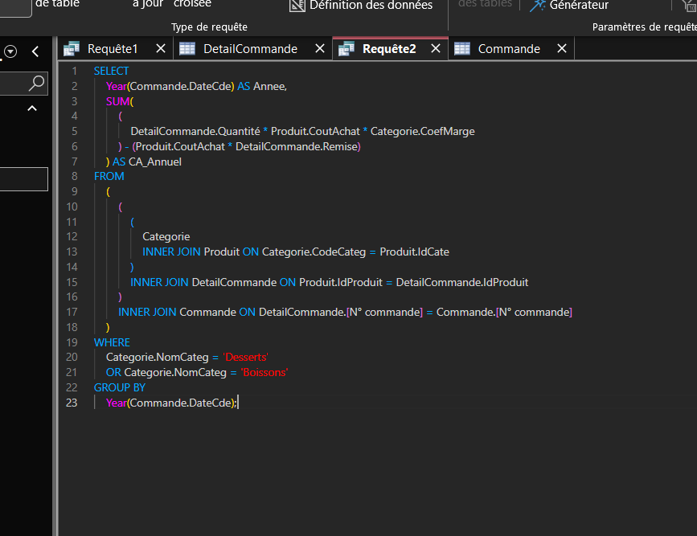
Cette requete renvoie une année suivi des chiffres d'affaires réalisés par les desserts et les boissons
-
Indicateur 3 : Nombre de produits carnés (viandes) non commandés actuellement
On cherche ici à compter le nombre de produits de la catégorie des viandes qui ne figurent actuellement dans aucune commande client. Ça peut être intéressant pour identifier les références qui dorment en stock ou qui ne se vendent pas du tout, afin d'aider l'entreprise à faire du tri dans son catalogue fournisseur et à réduire les coûts d'achat inutiles.
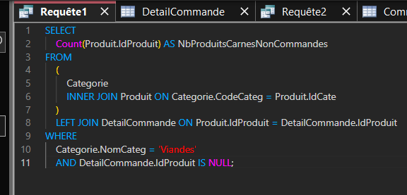
Cette requête renvoie donc le nombre de produits carnés n'étant dans aucune commande
-
Indicateur 4 : Clients pilotes ayant autant de commandes que leurs partenaires
On cherche ici à identifier les binômes de clients (un client pilote et son client partenaire associé) qui ont passé très exactement le même nombre de commandes globales. Ça peut être intéressant pour évaluer l'efficacité du système de partenariat, et voir si la relation entre les deux entreprises est équilibrée au point qu'elles adoptent le même rythme d'achat pour leurs commandes.
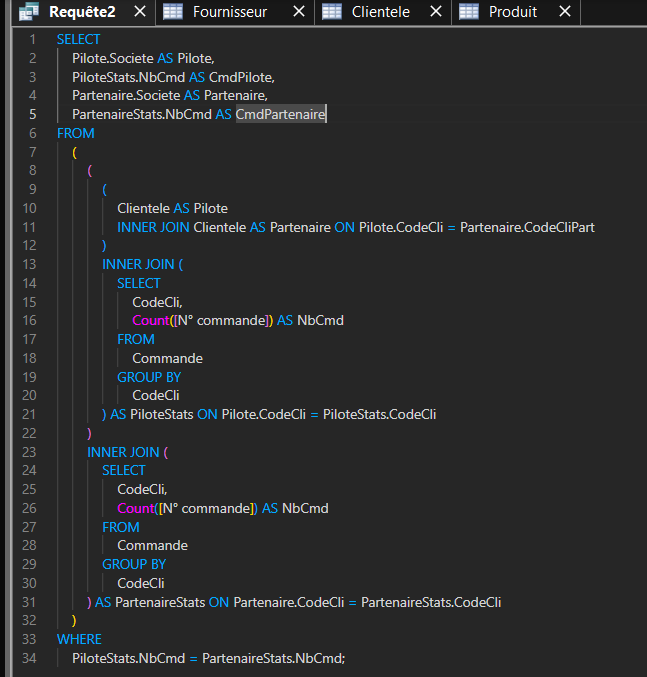
Cette requete renvoie donc la liste des clients pilotes ayant passé le meme nombre de commandes que leurs partenaires
Résultats des indicateurs
-
Indicateurs 1 : CA membre de l'UE
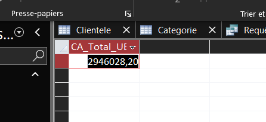
Le chiffre d'affaires recherché vaut donc environ 2 946 000 EUROS ce qui représente beaucoup d'argent
-
Indicateur 2 / CA Annuel boissons & dessert
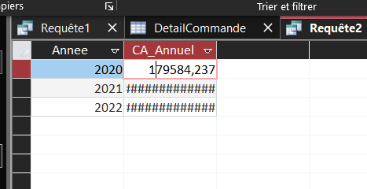
Par probleme d'affichage d'Acces seule une valeur et visible à la fois, mais le CA augmente au fil des années.
-
Indicateur 3 : Produits carnés non commandés
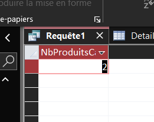
Seuls 2 produits carnés ne sont dans aucune commande actuellement, les stocks sont donc globalement bien gérés
-
Indicateur 4 : Relations client pilotes, clients partenaire.
*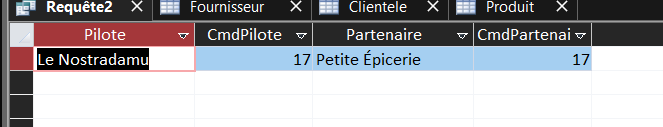
Seuls le Nostradamu et Petite Epicerie ont le meme nombre de commandes, prouvant alors que les partenariats ne sont peut etre pas si rentables que ca
Difficultés rencontrées lors du travail et axes de travail.
Au cours de mon travail, j'ai pu rencontrer certaines difficultés :
- Les noms des attributs dans la base :
Certains attributs avec un nom composé de 2 mots sans espaces, pour la syntaxe en SQL c'etait compliquée de taper.
La solution a été de renommer les attributs et avec quelques recherches, j'ai pu trouver qu'il était possible d'utiliser des [] dans nos requetes SQL.
-
Indicateur Numéro 4 :
L'indicateur numéro 4 s'est révélé tres compliqué en termes de compréhension et d'écriture
Pour effectuer cette requête, on sélectionne la société (Societe) du client pilote et son nombre de commandes, ainsi que la société du client partenaire et son nombre de commandes. Ensuite de la table Clientele (renommée Pilote) on joint à nouveau la table Clientele (renommée Partenaire) sur le code client partenaire (CodeCli vers CodeCliPart). On y joint t ensuite deux sous-requêtes qui comptent le nombre total de commandes ([N° commande]) par client dans la table Commande : la première jointe sur le code client du pilote (CodeCli), la seconde jointe sur le c ode client du partenaire. Et on restreint le tout par la condition « WHERE » le nombre de commandes calculé du pilote est égal à celui de son partenaire. De là, on obtient la liste des binômes respectant cette stricte égalité
Les jointures et les "AS" a effecuté ont été plus compliqué que tous les autres au cours du travail, le reste du projet a été globalement plutot simple.
J'ai travaillé tout seul, sur ma machine personelle et avec l'aide du cours d'IBD et de DW